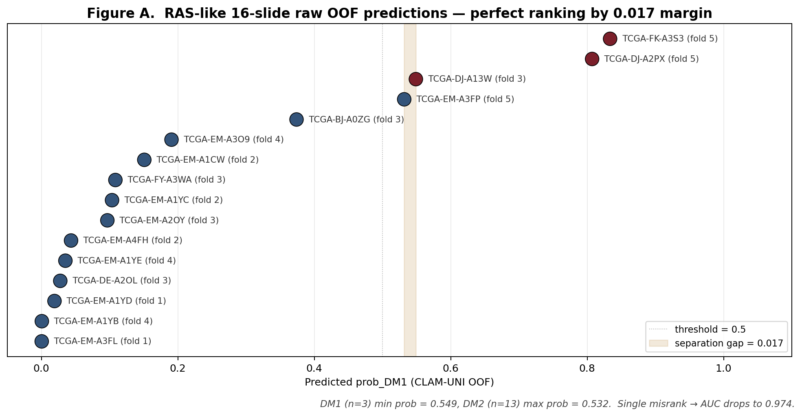
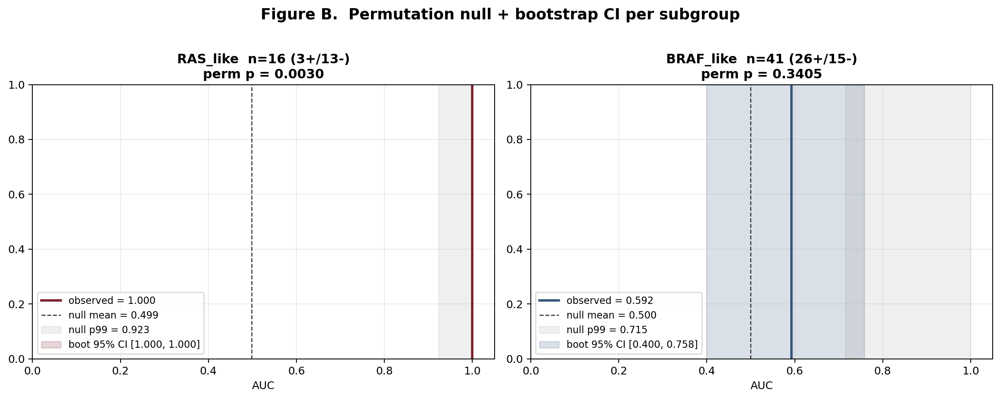
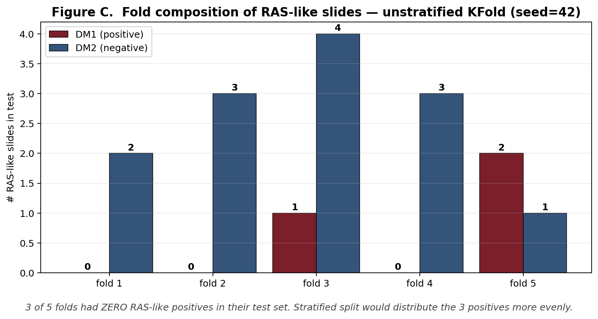
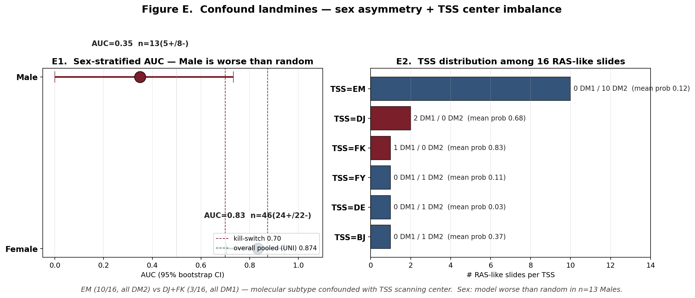
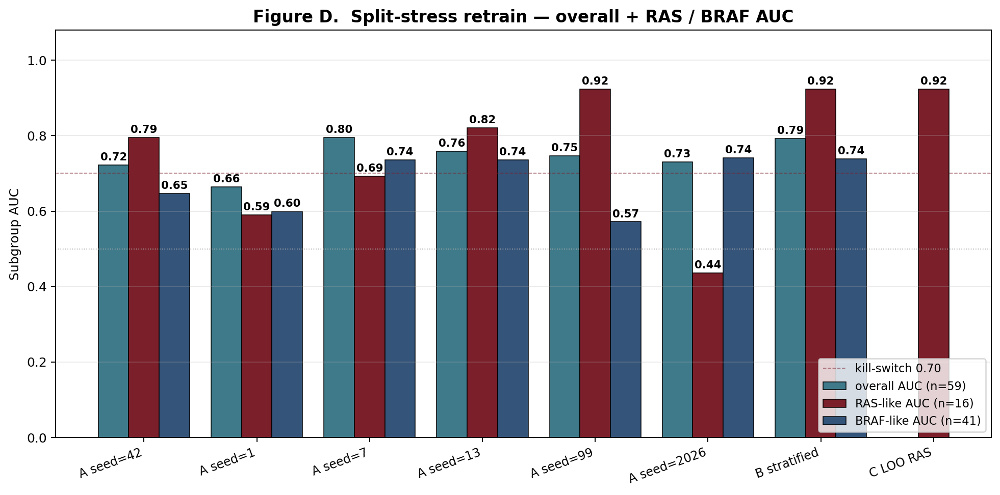
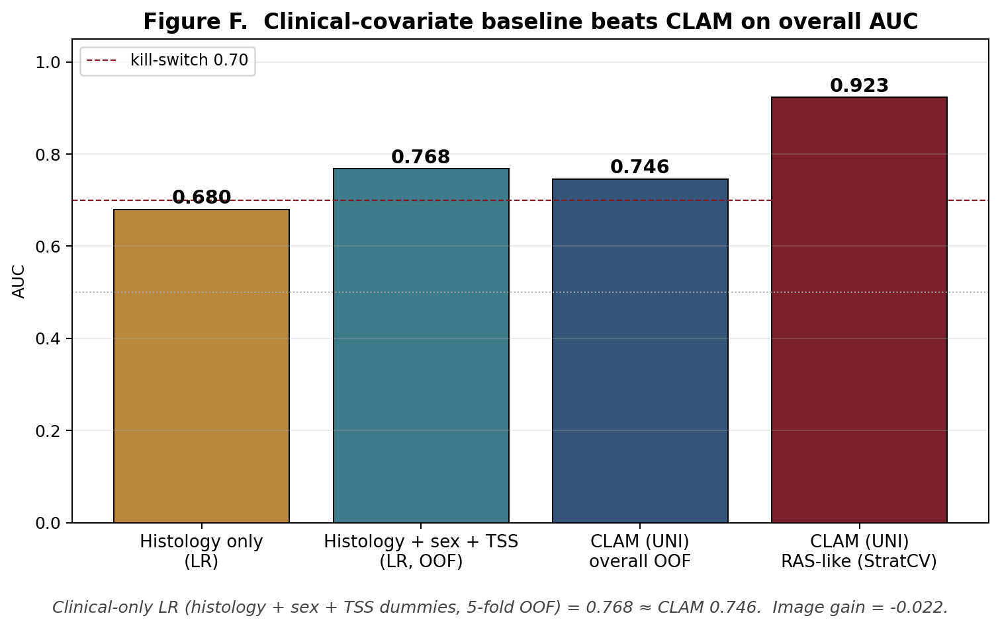
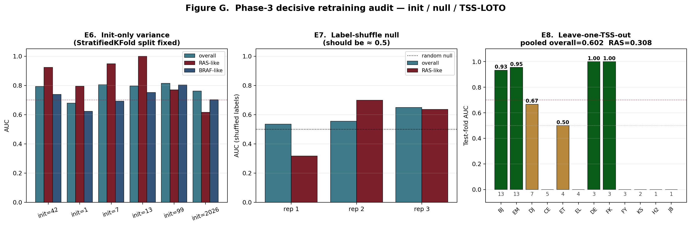
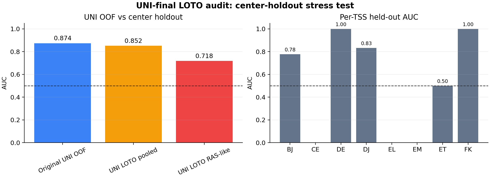

01Verdict
advisor-facing conclusion with every number tied to a local evidence file
Do not publish the RAS-like AUC=1.000 as currently framed.
The TCGA-only image channel is not the load-bearing signal. RAS-like/FVPTC membership is exactly the same 16-slide subset, the 1.000 ranking has a 0.017 probability gap, the 3 positive RAS-like slides come from DJ/FK while the 10 EM RAS-like slides are all DM2, and clinical-only metadata outperforms the multimodal model.
| Audit number | Value | Scope | Source | Meaning |
|---|---|---|---|---|
| Original RAS-like/FVPTC AUC | 1.000 | n=16, n_pos=3 | AUDIT_SUMMARY.json C3 | Pre-audit headline |
| RAS-like separation gap | 0.017 | lowest DM1 minus highest DM2 | c2_prob_distribution.tsv | One near-boundary rank drives perfect AUC |
| LOTO RAS-like AUC | 0.308 | pooled leave-one-TSS-out | PHASE3_AUDIT_SUMMARY.json E8 | Worse than random under center holdout |
| LOTO overall AUC | 0.602 | pooled leave-one-TSS-out | PHASE3_AUDIT_SUMMARY.json E8 | Overall signal weakens materially |
| TSS-only LR within RAS-like | 1.000 | TSS dummies only; no image features | tss_only_within_raslike_lr.tsv/json | Perfect ranking is reproducible without pixels |
| Clinical-only LR | 0.768 | histology + sex + TSS | phase4/s3_multimodal_LR.tsv | Beats image + clinical |
| Multimodal LR | 0.756 | CLAM_prob + clinical | phase4/s3_multimodal_LR.tsv | Net image gain -0.012 |
| Male raw AUC | 0.350 | n=13 males | PHASE2_AUDIT_SUMMARY.json E1 | Sex-stratified failure |
| UNI-final OOF AUC | 0.874 | n=54 | bootstrap_auc_uni.json | Foundation encoder improves overall ranking |
| UNI-final LOTO overall AUC | 0.852 | center holdout | audit_uni_loto/UNI_LOTO_SUMMARY.json | Overall signal survives center holdout |
| UNI-final LOTO RAS-like AUC | 0.718 | center holdout in 16 RAS-like slides | audit_uni_loto/UNI_LOTO_SUMMARY.json | No 1.000; subgroup remains underpowered |
TCGA-THCA CLAM OOF predictions; 16 RAS-like/FVPTC slides with 3 positives.
C1-C5, E1-E8 plus S1/S2/S3/S5 corrective baselines, all CPU and reproducible.
External H&E with TSS-balanced design is required before an image-DM1 main claim is defensible.
02Data Definitions
scope dictionary for reviewer/advisor reading
| Object | Definition | n | Role |
|---|---|---|---|
| TCGA-THCA WSI pilot | Slides with pre-extracted foundation-model tile features and CLAM OOF predictions | 59 ViT-L audit / 54 UNI final | Paper 2 image-DM1 pilot |
| DM1 label | Paper 1 molecular dark-matter cluster label projected onto image-available TCGA cases | 29 positive in ViT-L OOF | Binary CLAM target |
| RAS-like/FVPTC subset | Molecular_subtype=RAS_like and histology_subtype=FVPTC; identical in the 59-slide subset | 16 (3/13) | Original perfect-AUC subgroup |
| TSS | TCGA tissue source site parsed from submitter_id, e.g. TCGA-EM-* | 12 TSS groups in OOF set | Batch-effect axis |
| Clinical-only LR | Out-of-fold logistic regression on histology, sex, and TSS dummies | 57 analyzable cPTC/FVPTC slides | Image-gain control |
| LOTO | Leave-one-TSS-out retraining and pooled evaluation | all TSS groups | Center-holdout truth test |
03Phase 1 Confound Landscape
C1-C5: overlap, raw distribution, permutation null, shortcut probe, fold composition
Data. The audit starts from phase2_tcga_clam/clam_per_slide_predictions.tsv plus sample_master_v3.tsv. Analysis. C1-C5 are no-retraining checks. Meaning. The headline perfect AUC is a duplicated subgroup result with a narrow margin. Clinical meaning. A reviewer can reproduce the problem before touching the model weights.

Raw 16-slide ranking
| Rank | Case | TSS | Label | prob_DM1 | Fold |
|---|---|---|---|---|---|
| 1 | TCGA-EM-A3FL | EM | DM2 | 0.000 | 1 |
| 2 | TCGA-EM-A1YB | EM | DM2 | 0.001 | 4 |
| 3 | TCGA-EM-A1YD | EM | DM2 | 0.019 | 1 |
| 4 | TCGA-DE-A2OL | DE | DM2 | 0.028 | 3 |
| 5 | TCGA-EM-A1YE | EM | DM2 | 0.035 | 4 |
| 6 | TCGA-EM-A4FH | EM | DM2 | 0.043 | 2 |
| 7 | TCGA-EM-A2OY | EM | DM2 | 0.097 | 3 |
| 8 | TCGA-EM-A1YC | EM | DM2 | 0.103 | 2 |
| 9 | TCGA-FY-A3WA | FY | DM2 | 0.108 | 3 |
| 10 | TCGA-EM-A1CW | EM | DM2 | 0.151 | 2 |
| 11 | TCGA-EM-A3O9 | EM | DM2 | 0.191 | 4 |
| 12 | TCGA-BJ-A0ZG | BJ | DM2 | 0.374 | 3 |
| 13 | TCGA-EM-A3FP | EM | DM2 | 0.532 | 5 |
| 14 | TCGA-DJ-A13W | DJ | DM1 | 0.549 | 3 |
| 15 | TCGA-DJ-A2PX | DJ | DM1 | 0.807 | 5 |
| 16 | TCGA-FK-A3S3 | FK | DM1 | 0.834 | 5 |
Permutation null and bootstrap CI
| Group | n (pos/neg) | Observed AUC | Permutation p | Bootstrap 95% CI | Source |
|---|---|---|---|---|---|
| RAS_like | 16 (3/13) | 1.000 | 0.0030 | [1.000, 1.000] | c3_permutation_test.json |
| FVPTC | 16 (3/13) | 1.000 | 0.0039 | [1.000, 1.000] | c3_permutation_test.json |
| BRAF_like | 41 (26/15) | 0.592 | 0.3405 | [0.400, 0.758] | c3_permutation_test.json |
| cPTC | 41 (26/15) | 0.592 | 0.3437 | [0.416, 0.767] | c3_permutation_test.json |

Fold imbalance
| Fold | n | n_pos | n_neg | Interpretation |
|---|---|---|---|---|
| 1 | 2 | 0 | 2 | zero positives |
| 2 | 3 | 0 | 3 | zero positives |
| 3 | 5 | 1 | 4 | has positives |
| 4 | 3 | 0 | 3 | zero positives |
| 5 | 3 | 2 | 1 | has positives |

04Phase 2/3 Decisive Evidence
sex failure, TSS determinism, clinical baseline, init variance, label-shuffle null, LOTO
The decisive test is LOTO.
Random and stratified splits can keep the same TSS centers in train and test. LOTO removes that escape route: overall AUC becomes 0.602, and RAS-like AUC becomes 0.308.
TSS distribution among RAS-like slides
| TSS | n | n DM1 | mean prob_DM1 | Interpretation |
|---|---|---|---|---|
| BJ | 1 | 0 | 0.374 | single-site |
| DE | 1 | 0 | 0.028 | single-site |
| DJ | 2 | 2 | 0.678 | deterministic anchor |
| EM | 10 | 0 | 0.117 | deterministic anchor |
| FK | 1 | 1 | 0.834 | deterministic anchor |
| FY | 1 | 0 | 0.108 | single-site |

Split-stress retraining
| Split strategy | Overall AUC | RAS-like AUC | BRAF-like AUC | Source |
|---|---|---|---|---|
| original GPU KFold seed=42 | 0.746 | 1.000 | 0.592 | phase2_tcga_clam/clam_per_slide_predictions.tsv |
| KFold CPU seed=42 | 0.722 | 0.795 | 0.646 | retrain_strategyA_multi_seed.tsv |
| KFold CPU seed=1 | 0.664 | 0.590 | 0.600 | retrain_strategyA_multi_seed.tsv |
| KFold CPU seed=7 | 0.795 | 0.692 | 0.736 | retrain_strategyA_multi_seed.tsv |
| KFold CPU seed=13 | 0.759 | 0.821 | 0.736 | retrain_strategyA_multi_seed.tsv |
| KFold CPU seed=99 | 0.747 | 0.923 | 0.572 | retrain_strategyA_multi_seed.tsv |
| KFold CPU seed=2026 | 0.730 | 0.436 | 0.741 | retrain_strategyA_multi_seed.tsv |
| StratifiedKFold(3) | 0.793 | 0.923 | 0.738 | RETRAIN_SUMMARY.json |
| LOO 16 RAS-like | n/a | 0.923 | n/a | RETRAIN_SUMMARY.json |

Clinical-only baseline
| Predictor | OOF AUC | Source |
|---|---|---|
| clinical_only | 0.768 | phase4/s3_multimodal_LR.tsv |
| clam_only | 0.691 | phase4/s3_multimodal_LR.tsv |
| multimodal | 0.756 | phase4/s3_multimodal_LR.tsv |

Leave-one-TSS-out
| Held-out TSS | n test | n DM1 | n RAS | n RAS DM1 | AUC | Source |
|---|---|---|---|---|---|---|
| BJ | 13 | 3 | 1 | 0 | 0.933 | e8_leave_one_tss_out.tsv |
| CE | 5 | 5 | 0 | 0 | n/a | e8_leave_one_tss_out.tsv |
| DE | 3 | 1 | 1 | 0 | 1.000 | e8_leave_one_tss_out.tsv |
| DJ | 7 | 6 | 2 | 2 | 0.667 | e8_leave_one_tss_out.tsv |
| EL | 4 | 4 | 0 | 0 | n/a | e8_leave_one_tss_out.tsv |
| EM | 13 | 2 | 10 | 0 | 0.955 | e8_leave_one_tss_out.tsv |
| ET | 4 | 2 | 0 | 0 | 0.500 | e8_leave_one_tss_out.tsv |
| FK | 3 | 2 | 1 | 1 | 1.000 | e8_leave_one_tss_out.tsv |
| FY | 3 | 0 | 1 | 0 | n/a | e8_leave_one_tss_out.tsv |
| H2 | 1 | 1 | 0 | 0 | n/a | e8_leave_one_tss_out.tsv |
| J8 | 1 | 1 | 0 | 0 | n/a | e8_leave_one_tss_out.tsv |
| KS | 2 | 2 | 0 | 0 | n/a | e8_leave_one_tss_out.tsv |

UNI-final center-holdout audit
Refined conclusion after GPU LOTO.
The ViT-L subgroup headline was artefactual, but the UNI-final model is not simply dead: overall UNI LOTO AUC is 0.852. The honest subgroup claim is smaller and underpowered, with UNI LOTO RAS-like AUC 0.718, not 1.000.
| Metric | Value | Source |
|---|---|---|
| Original UNI OOF overall | 0.874 | phase2_tcga_clam_UNI/clam_per_slide_predictions.tsv |
| UNI LOTO pooled overall | 0.852 | audit_uni_loto/UNI_LOTO_SUMMARY.json |
| UNI LOTO pooled RAS-like | 0.718 | audit_uni_loto/UNI_LOTO_SUMMARY.json |
| UNI LOTO pooled BRAF-like | 0.855 | audit_uni_loto/UNI_LOTO_SUMMARY.json |
| UNI LOTO Female | 0.862 | audit_uni_loto/UNI_LOTO_SUMMARY.json |
| UNI LOTO Male | 0.875 | audit_uni_loto/UNI_LOTO_SUMMARY.json |

Label-shuffle null passed.
The shuffled-label controls stay near chance, so this is not a simple memorization bug. The failure mode is specifically TSS/site entanglement plus sparse subgroup positives.
05Phase 4 Corrective Baselines
S1/S2/S3/S5: what each fix buys and what it cannot repair
Data. Same 59-slide feature set and OOF labels. Analysis. TSS-ComBat, TSS-balanced split, multimodal LR, and EM-out sensitivity. Meaning. No correction recovers the original 1.000 under honest center stress. Clinical meaning. The honest TCGA-only ceiling is pilot-grade, not submission-grade.
S1: TSS-ComBat on tile features
| Init seed | Overall | RAS-like | BRAF-like | Male | Female | Source |
|---|---|---|---|---|---|---|
| 42 | 0.707 | 0.615 | 0.672 | 0.950 | 0.688 | phase4/s1_tss_combat_per_init.tsv |
| 1 | 0.626 | 0.923 | 0.487 | 0.750 | 0.589 | phase4/s1_tss_combat_per_init.tsv |
| 7 | 0.661 | 0.692 | 0.682 | 0.625 | 0.672 | phase4/s1_tss_combat_per_init.tsv |
| 13 | 0.629 | 0.821 | 0.536 | 0.525 | 0.661 | phase4/s1_tss_combat_per_init.tsv |
Median S1 overall AUC is 0.645; median male AUC improves to 0.688 from raw 0.350, but the overall signal remains pilot-level.
S2: TSS-balanced split
| Init seed | Overall | RAS-like | BRAF-like | Source |
|---|---|---|---|---|
| 42 | 0.731 | 0.795 | 0.651 | phase4/s2_tss_balanced_split.tsv |
| 1 | 0.800 | 0.923 | 0.721 | phase4/s2_tss_balanced_split.tsv |
| 7 | 0.844 | 0.897 | 0.813 | phase4/s2_tss_balanced_split.tsv |
| 13 | 0.801 | 0.923 | 0.754 | phase4/s2_tss_balanced_split.tsv |
S2 preserves high RAS-like AUC when matched centers remain in train/test. That is useful as a matched-center ceiling, not as evidence of center-generalized biology.
S3: Multimodal LR
| Predictor | OOF AUC | Source |
|---|---|---|
| clinical_only | 0.768 | phase4/s3_multimodal_LR.tsv |
| clam_only | 0.691 | phase4/s3_multimodal_LR.tsv |
| multimodal | 0.756 | phase4/s3_multimodal_LR.tsv |
CLAM-only in this corrective baseline is 0.691. Clinical-only is 0.768. Multimodal is 0.756, so the image channel net gain is -0.012.
S5: EM-out sensitivity
| Init seed | Overall | RAS-like | BRAF-like | n train | Source |
|---|---|---|---|---|---|
| 42 | 0.667 | 0.667 | 0.633 | 49 | phase4/s5_em_out.tsv |
| 1 | 0.688 | 0.667 | 0.682 | 49 | phase4/s5_em_out.tsv |
| 7 | 0.712 | 0.778 | 0.690 | 49 | phase4/s5_em_out.tsv |
| 13 | 0.671 | 0.778 | 0.633 | 49 | phase4/s5_em_out.tsv |
Dropping the 10 EM RAS-like DM2 anchors lowers the RAS-like median to 0.722. This supports the TSS-anchor interpretation.
06Forward Paths
Path 1/2/3 status after the audit
| Path | Goal | Current status | Blocker | Action |
|---|---|---|---|---|
| Path 1: multi-cohort multimodal nomogram | NC/Nature Cancer-grade image + clinical + RNA model | Scientifically valid only with external H&E | K2 or FFPE multi-site timing | Keep design; do not headline TCGA-only image gain |
| Path 2: methods paper | DIAL sequel for TCGA pathology-AI TSS audits | THCA worked example complete | Needs LUAD/BRCA feature extraction | Use this dossier as the advisor packet |
| Path 3: Paper 1 absorption | Safe NC path by demoting Paper 2 image work to supp case study | Audit caveat already added to Paper 2 report | Needs Paper 1 supplement insertion | Add TSS-confound disclosure section |
| K2 outreach | Resolve external validation timeline | Draft exists | Recipient name/email | Author sends after editing |
07Decision Matrix
recommended disposition is highlighted
| Option | Benefit | Risk | Disposition | Evidence |
|---|---|---|---|---|
| Publish RAS-like AUC=1.000 as-is | Maximum headline | Refutable by LOTO/TSS-only audit | Reject | AUDIT_REPORT_v2.md |
| Report original model only in supplement | Preserves useful pilot work | Cannot support main-text claim | Use for Path 3 | AUDIT_REPORT_v2.md |
| TCGA-only image-DM1 main claim | Fast | Clinical-only beats image+clinical | Do not use | phase4/s3_multimodal_LR.tsv |
| Clinical + image nomogram | Truthful multimodal framing | Current image gain is negative | Future only | phase4/s3_multimodal_LR.tsv |
| K2 H&E external validation | Breaks TCGA TSS structure | Needs slide retrieval | Primary fix | K2_HE_PUSH_EMAIL_DRAFT.md |
| LUAD/BRCA replication | Methods-paper generalization | No local WSI features yet | Scaffold now | METHODS_PAPER_OUTLINE.md |
| ComBat correction | Improves male failure in this pilot | Does not restore original 1.000 | Supplementary baseline | phase4/s1_tss_combat_per_init.tsv |
| TSS-balanced split | Shows matched-center ceiling | Still fails LOTO truth test | Report with caveat | phase4/s2_tss_balanced_split.tsv |
| EM-out sensitivity | Confirms EM-DM2 anchor load-bearing | Underpowered after removal | Include as caveat | phase4/s5_em_out.tsv |
08Supplementary Files
all-pages card grid and audit deliverables
| File | Purpose |
|---|---|
| AUDIT_REPORT_v2.md | Narrative final report for the audit |
| METHODS_PAPER_OUTLINE.md | Path 2 methods-paper scaffold |
| METHODS_PAPER_TABLES.md | Cross-cohort methods-paper table scaffold; THCA complete, LUAD/BRCA pending inputs |
| ../audit_uni_predictions/UNI_PREDICTION_ONLY_AUDIT.md | UNI-final OOF prediction-only audit; paired with UNI LOTO below |
| ../audit_uni_loto/UNI_LOTO_REPORT.md | UNI-final GPU leave-one-TSS-out center-holdout audit |
| K2_HE_PUSH_EMAIL_DRAFT.md | Author-only K2 H&E outreach draft |
| figures/fig_A..G_*.png/pdf | Seven audit figures embedded above |
| phase4/*.tsv | Corrective-baseline raw tables |
| tss_only_within_raslike_lr.tsv/json | Generated evidence for TSS-only perfect ranking |
09Sources + Paths
local evidence chain
| Source | Path |
|---|---|
| Audit root | project/results/p2_image_dm1_v2_foundation_clam_2026_05_07/analysis_supp/audit_ras_auc100/ |
| Dossier source copy | project/results/p2_image_dm1_v2_foundation_clam_2026_05_07/analysis_supp/audit_ras_auc100/AUDIT_DOSSIER.html |
| Hub copy | project/papers_hub_2026_05_04/paper2_image_dm1_audit_dossier.html |
| Live deploy target | /var/www/papers/papers_hub_2026_05_04/paper2_image_dm1_audit_dossier.html |
| Builder | project/results/p2_image_dm1_v2_foundation_clam_2026_05_07/scripts/audit_make_dossier.py |
| Original OOF predictions | project/results/p2_image_dm1_v2_foundation_clam_2026_05_07/phase2_tcga_clam/clam_per_slide_predictions.tsv |
| UNI bootstrap | project/results/p2_image_dm1_v2_foundation_clam_2026_05_07/analysis_supp/bootstrap_auc_uni.json |
| UNI LOTO audit | project/results/p2_image_dm1_v2_foundation_clam_2026_05_07/analysis_supp/audit_uni_loto/ |
Build generated by audit_make_dossier.py on 2026-05-09. Voice-protected Paper 1 manuscript sections were not edited by this dossier builder.